Passing
Senet means “passing”. It was played in Egypt for some three thousand years, from before the first dynasties to the Roman period: thirty squares in three rows of ten, two players, a handful of pieces each.
A handlist of the Cleveland Museum of Art's Egyptian objects from the New Kingdom to the Late Period, 1550 to 332 BCE, oldest first. Its pages are counted on a senet board: faience squares from a tomb at Abydos, made in the reign of Thutmose III, with one of the board's own pieces standing on the page you are reading.
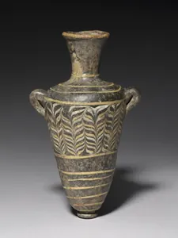
1549–1296 BCE · Dynasties 18–19glass
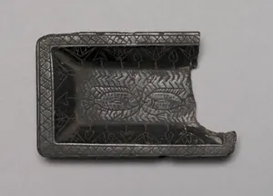
1540–1296 BCE · Dynasty 18steatite
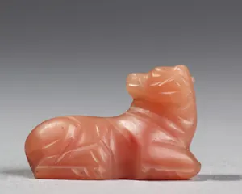
1540–1296 BCE · Dynasty 18carnelian
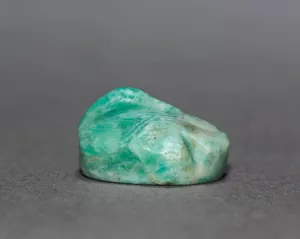
1540–1295 BCE · Dynasty 18feldspar
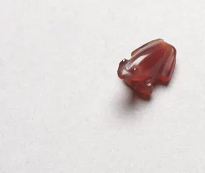
c. 1540–1296 BCE · Dynasty 18carnelian
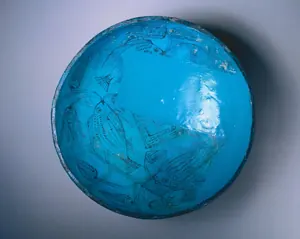
1540–1350 BCE · Dynasty 18blue faience with purple decoration
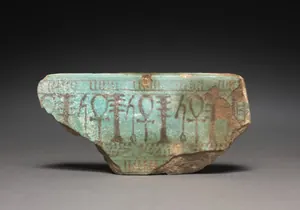
1540–1069 BCEturquoise faience with purple-black painted decoration
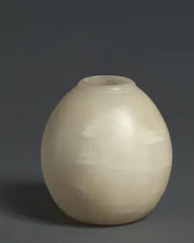
c. 1540–1296 BCE · Dynasty 18travertine
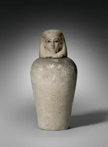
1540–1296 BCE · Dynasty 18limestone
1540–1296 BCE · Dynasty 18limestone
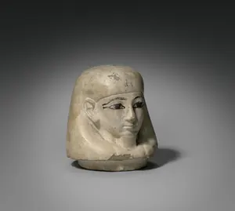
1540–1296 BCE · Dynasty 18limestone
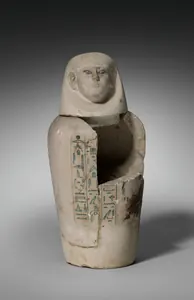
1540–1296 BCE · Dynasty 18limestone
Senet means “passing”. It was played in Egypt for some three thousand years, from before the first dynasties to the Roman period: thirty squares in three rows of ten, two players, a handful of pieces each.